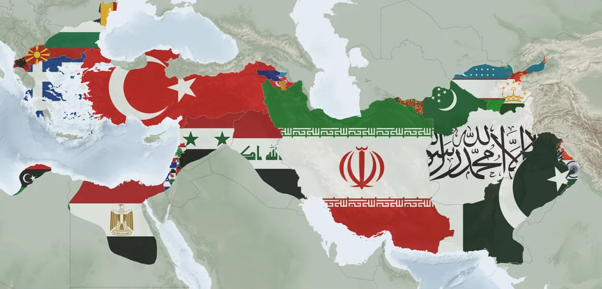
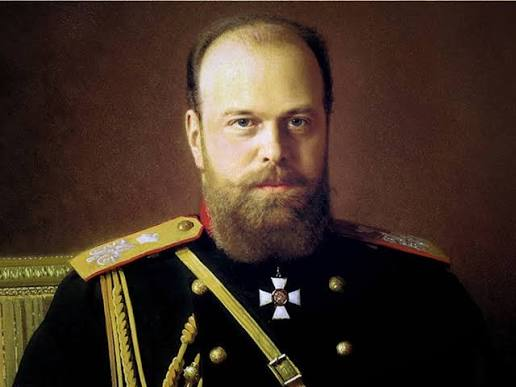

Военная революция Филиппа II
До середины IV века до нашей эры Македония оставалась раздробленным и уязвимым государством. Ситуацию переломил царь Филипп II (359–336 гг. до н.э.), который превратил полуварварский край в мощнейшую военную державу своего времени.
Филипп II создал профессиональную армию, ключевым элементом которой стала знаменитая македонская фаланга. Пехотинцы, вооруженные шестиметровыми пиками (сариссами), образовывали монолитный щитовой барьер. Центр армии сковывал противника, а тяжелая дворянская конница (гетайры) наносила решающий фланговый удар в рамках тактики «молота и наковальни».
Подчинив греческие полисы в битве при Херонее (338 г. до н.э.) и создав Коринфский союз, Филипп подготовил почву для походов в Азию. После его неожиданного убийства в 336 году до н.э. трон унаследовал двадцатилетний сын Александр, доведший замыслы отца до абсолюта.
Гордиев узел и символизм власти
В 333 году до н.э. в древней столице Фригии Гордионе Александр столкнулся с легендарным запутанным узлом на повозке царя Мидаса. Пророчество гласило, что рассекший узел станет властелином всей Азии. Александр не стал тратить время на распутывание и просто разрубил узел мечом, продемонстрировав решительность, ставшую его главным политическим символом.
Хроника Походов (334–323 гг.)
Македонская империя в период расцвета, наложенная на современные границы

Охваченные Территории
- • Европа: Македония, Фракия, Греческие полисы, Иллирия.
- • Северная Африка: Египет, Ливия, оазис Сива.
- • Ближний Восток: Сирия, Финикия, Иудея, Месопотамия.
- • Азия: Персия, Парфия, Бактрия, Согдиана, Гиркания.
- • Индия: Бассейн реки Инд и Пенджаб.
Под единой властью Александра оказалась территория, охватывающая более 30 современных государств Европы, Азии и Африки.
Инженерный гений и осада Тира
Осада островного города Тир в 332 году до н.э. вошла в историю как один из самых выдающихся примеров античного инженерного искусства. Находясь на острове в 800 метрах от берега и защищенный 45-метровыми стенами, Тир казался неприступным для армии без мощного флота.
Александр приказал построить гигантскую насыпь (дамбу) шириной 60 метров прямо по дну Средиземного моря. Когда тирийцы начали атаковать строителей с кораблей, македоняне воздвигли две 50-метровые осадные башни, обшитые сырыми кожами для защиты от горящих стрел. В ходе семимесячной осады македонский флот блокировал гавани, а тараны на кораблях пробили брешь в стенах.
Государство и политика слияния
Администрация
Александр сохранил традиционную персидскую систему сатрапий. Однако он разделил власть: гражданские функции часто сохраняли знатные персы, а военные и финансовые рычаги находились в руках македонских и греческих офицеров.
«Свадьба в Сузах»
Чтобы сплотить знать Запада и Востока, в 324 году до н.э. была организована массовая свадьба: 10 000 македонских воинов и 80 высших полководцев сочетались браком с знатными персидскими женщинами.
Финансы и Города
Введение огромных персидских сокровищ в экономический оборот подстегнуло международную торговлю. Основание десятков новых городов (Александрий) создало сеть опорных пунктов культуры и ремесла.
Жизнь империи: Общество, быт и повседневность
Городской быт и мультикультурализм
Жизнь в заново основанных Александриях кардинально отличалась от быта в глухих провинциях. В городах насаждался греческий образ жизни: возводились гимнасии, театры, ипподромы и агоры. Греческие переселенцы, воины-ветераны и торговцы формировали новую элиту.
При этом в повседневной жизни простые жители — египетские феллахи, вавилонские земледельцы и согдийские скотоводы — продолжали жить по многовековым традициям. Возник уникальный языковой дуализм: греческий язык (койне) стал языком власти и торговли, а в быту сохранялись арамейский, коптский и древнеперсидский.
Экономика, налоги и монетизация
Захват персидских царских сокровищниц в Сузах и Персеполе выбросил на рынок сотни тонн золота и серебра. Это спровоцировало мощнейший экономический бум и интеграцию рынков.
Александр перевел всю империю на единую серебряную монету — аттическую тетрадрахму. Налоги собирались жестко: крестьяне выплачивали долю урожая (до 10–20%), а торговые караваны облагались пошлинами на границах сатрапий. Денежная реформа навсегда вытеснила натуральный обмен из крупной торговли.
Социальная иерархия
Вершину пирамиды занимали греко-македонские полководцы и чиновники, за ними следовала высшая восточная знать, присягнувшая царю. Основную массу населения составляли свободные ремесленники, земледельцы и огромная армия рабов.
Религиозная веротерпимость
Александр не навязывал греческих богов. Он короновался как фараон в Египте, жертвовал Вавилонскому Мардуку и почитал местный пантеон, что обеспечивало лояльность жречества и простого народа.
Связь и Дорожная сеть
Использование и модернизация Царской дороги Персии позволили наладить быструю курьерскую почту. Торговые караваны и военные отряды перемещались между Средиземноморьем и Индией в рекордные сроки.
Мятеж в Описе и отмена старой гвардии
Нарастающее проникновение восточных традиций вызывало бурный протест среди старых македонских ветеранов. В 324 году до н.э. в городе Опис Александр объявил об отпуске домой пожилых и раненых воинов с щедрыми выплатами. Войско восприняло это как попытку полностью заменить македонян азиатскими персидскими юношами («эпигонами»).
Армия подняла мятеж, выкрикивая, чтобы царь отправлялся воевать дальше только со своим отцом Амоном. Александр ответил суровыми казненными мерами против зачинщиков, а затем закрылся в дворце на три дня, общаясь исключительно с персидской знатью. Осознав опасность быть отстраненными от царской милости, македонские солдаты пришли к дворцу с мольбами о прощении, что закончилось грандиозным пиром примирения на 9 000 гостей.
Падение и Войны Диадохов
Держава Александра держалась исключительно на авторитете и таланте своего создателя. Когда 10 июня 323 года до н.э. Александр умер в Вавилоне в возрасте 32 лет, у него не было зрелого наследника.
Вопрос о преемственности вылился в 40-летние кровопролитные **Войны Диадохов** (полководцев Александра). Империя распалась на несколько эллинистических царств:
- Государство Птолемеев: Закрепилось в Египте со столицей в Александрии.
- Держава Селевкидов: Охватила Ближний Восток, Месопотамию и Иранское нагорье.
- Царство Антигонидов: Удержало контроль над Македонией и Грецией.

Царь Александр III Великий (356–323 гг. до н.э.)
Наследие Эллинизма
Распад государства не уничтожил цивилизационные плоды походов. На развалинах возникла глобальная культура эллинизма.
Язык Койне
Общегреческий диалект стал единым языком международной торговли, науки и дипломатии от Рима до Индии.
Александрийская Библиотека
Крупнейший центр науки античности, объединивший труды греческих, египетских и восточных ученых.
Греко-Буддизм
Синтез античного реалистического искусства и восточной философии в Бактрии и Гандхаре.
Торговые Сети
Интеграция дорог и рынков заложила основу для Великого Шелкового пути и торговли с Индией.